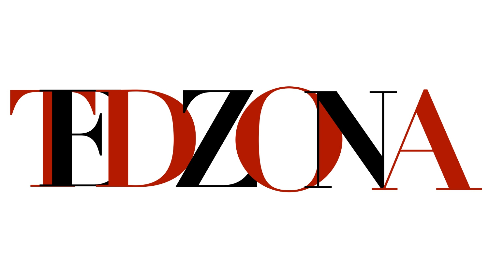

Динамичная платформа для нетворкинга и организации мероприятий
в формате TED, где каждый может заявить о себе и своем потенциале


Динамичная платформа для нетворкинга и организации мероприятий
в формате TED, где каждый может заявить о себе и своем потенциале
Здесь будет контент для страницы организации.